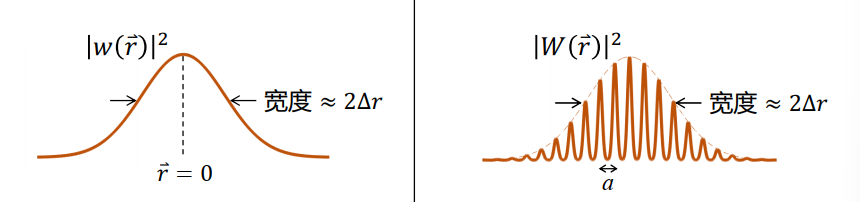

固体物理学习笔记（能带）
参考资料：
《固体物理基础》——阎守胜
课程PPT——俞宏毅自由电子气有三个近似
- 自由电子近似
- 单电子近似
- 弛豫时间近似
这三个近似是自由电子气模型的基础，自由电子气模型一定程度上可以描述现实世界，但很显然还有不足之处，主要来自于近似过度。能带论是从自由电子气发展来的另外一个模型，它取消了自由电子近似，开始研究离子实对电子的影响。
对于体系的哈密顿量 \[ \require{physics} \begin{align} H=&-\sum_i \frac{\hbar^2}{2m}\nabla^2_i+\frac{1}{2}\sum_{i,j}\frac{1}{4\pi\epsilon}\frac{e^2}{\abs{r_i-r_j}}-\sum_n \frac{\hbar^2}{2M}\nabla_n^2\\ &+\frac{1}{2}\sum_{n,m}\frac{(Ze)^2}{\abs{R_n-R_m}}-\sum_{i,n}\frac{1}{4\pi\epsilon}\frac{Ze^2}{\abs{r_i-R_n}} \end{align} \] 即便是考虑离子实的影响，我们也难以直接计算完整的哈氏量，我们需要采取一些近似，认为离子实对电子是有影响，但离子实本身由于质量很大，所以运动相对电子较慢，近似为静止。这个近似称为绝热近似(Born-Oppenheimer近似)，这样一来，上面的哈氏量中关于离子实运动的那项为0，离子实相互作用的那项为一个常数，可以丢掉，哈氏量剩下 \[ \begin{align} H=&-\sum_i \frac{\hbar^2}{2m}\nabla^2_i+\frac{1}{2}\sum_{i,j}\frac{1}{4\pi\epsilon}\frac{e^2}{\abs{r_i-r_j}}\\ &-\sum_{i,n}\frac{1}{4\pi\epsilon}\frac{Ze^2}{\abs{r_i-R_n}} \end{align} \] 对于上面的哈氏量，来自电子相互作用的那项是一个多变量函数，变量之间相互耦合，使得薛定谔方程难以精确求解，因此我们还需要采取一个近似。结合前面的单电子近似，将其他所有电子对某个电子的影响用平均场代替（因为其他电子在运动，所以原本应该是时间的函数），我们将其视为空间分布的平均场，同时将平均场与离子实对某个电子的势场全部揉在一起写成一个整体的势能函数\(V(r)\)，且这个函数是一个周期函数满足\(V(r+R_n)=V(r)\)，这个近似称为周期场近似（注意这里还不是弱周期势近似）。
单电子近似允许我们将电子相互作用项写为 \[ \begin{align} V_{ee}(r_i,r_j)=&\frac{1}{2}\sum_i\sum_{j\neq i}\frac{1}{4\pi \epsilon}\frac{e^2}{\abs{r_i-r_j}}\\ =&\sum_i v_i(r_i) \end{align} \] 因此总的哈氏量写为 \[ \begin{align} H=&\sum_i\pqty{\frac{\hbar^2}{2m}\nabla_i^2+v_i(r_i)-\sum_n \frac{1}{4\pi\epsilon}\frac{Ze^2}{\abs{r_i-R_n}}} \end{align} \]
如上所示，我们取消了自由电子近似以考虑离子实的作用，同时引入了一些较弱的近似用以将多体问题简化为单体问题。
接下来只需要解单电子的薛定谔方程即可，其中，周期性近似是能带产生的来源。
布洛赫定理(Bloch Theorem)与能带
布洛赫定理
周期性近似之所以能产生能带，需要布洛赫定理将其周期的效果表现出来。布洛赫定理有两种等价的表述，其中一种是：对于周期性势场的哈密顿量，其本征函数满足 \[ \begin{align} \psi(r+R_n)=e^{ikR_n}\psi(r) \end{align} \]
另外一种是其本征函数可以写为如下形式 \[ \begin{align} \psi(r)=e^{ikr}u_k(r) \end{align} \] 其中\(u_k(r)\)是一个周期函数满足\(u(r+R_n)=u(r)\)。这样的波函数称为布洛赫函数，从其数学形式可以看出，它是一个被周期函数被平面波调制，将其与自由电子相区别，这样的电子称为布洛赫电子
布洛赫定理的证明
布洛赫定理适用于周期势场，因此系统与平移操作离不开关系。定义平移算符有如下功能 \[ \begin{align} T_Rf(r)=&f(r+R) \end{align} \] 很显然平移本身对导数算符是不起作用的（动量守恒与空间平移不变性的关系），而对于周期函数也是没有影响，因此周期势场的哈密顿量与平移算符对易，则两个算符具有共同的本征函数。对于哈密顿量的本征函数有\(H\psi(r)=E\psi(r)\),其应该也是平移算符的本征函数，本征值为\(\lambda\):\(T_R\psi(r)=\lambda_R\psi(r)\)，即 \[ \begin{align} \psi(r+R)=&\lambda_R\psi(r)\\ \Rightarrow \abs{\lambda_R}^2=&1 \end{align} \] 第二行是由本征函数的归一化条件得到的。因此我们可以将本征值写为 \[ \begin{align} \lambda_R=\exp(i\phi(R)) \end{align} \] 其中\(\phi(R)\)是一个R的函数。同时，根据平移算符的定义我们可以看出 \[ \begin{align} T_{R_1+R_2}f(r)=&f(r+R_1+R_2)\\ =&T_{R_1}T_{R_2}f(r)\\ \Rightarrow T_{R_1+R_2}=&T_{R_1}T_{R_2} \end{align} \] 因此有: \[ \begin{align} T_{R_1+R_2}\psi(r)=&\exp(i\phi(R_1+R_2))\psi(r)\\ T_{R_1}T_{R_2}\psi(r)=&\exp\pqty{i(\phi(R_1)+\phi(R_2))}\\ \Rightarrow \phi(R_1+R_2)=&\phi(R_1)+\phi(R_2) \end{align} \] 当且仅当\(\phi(R)\)是R的线性函数的时候才满足上式，所以\(\phi(R)=kR\)，即 \[ \begin{align} \psi(r+R)=e^{ikR}\psi(r) \end{align} \] 布洛赫函数应多一个指标k用于标记不同的平移算符本征值\(\psi_k(r)\).k的取值以及物理意义将在下一小节介绍。
波矢k的物理意义
很显然，这里的\(\hbar k\)并不是布洛赫电子的波矢，因为若将动量算符作用在布洛赫函数上，显然是没法得到\(\hbar k\)的本征值的。
波矢\(k\)的取值由边界条件决定，对于周期势能近似，我们很自然地对整个系统使用周期边界条件 \[ \begin{align} \begin{cases} \psi(r+N_1a_1)=\psi(r)\\ \psi(r+N_2a_2)=\psi(r)\\ \psi(r+N_3a_3)=\psi(r) \end{cases} \end{align} \] 对于布洛赫函数，这样的边界条件无疑是在说 \[ \begin{align} \exp(ik\cdot N_ia_i)=&1\\ \Rightarrow k\cdot N_ia_i=2l_i\pi \end{align} \] 如果你还记得的话，我们的倒格矢满足\(b_i\cdot a_j=2\pi\delta_{ij}\),因此 \[ \begin{align} k=\sum_i\frac{l_i}{N_i}b_i \end{align} \] 波矢k正是我们倒格空间中的矢量。
关于能带
教材中提到过一句，实空间中有限的区域会导致分立的本征值，因此每一个k会有无穷个分立的本征值，引出新的量子数n，用于标记能带。但我觉得量子数n的出现，这并不是那么自然的一件事情1。而PPT中直接拿原子波函数来进行类比，然后就得到了“布洛赫电子本征态除了k还需要n与自旋s”的结论2。
量子数n的出现，也就是说能带的出现，我觉得还是依赖于周期性。因为周期性和实空间的有限相关，所以这可能是为什么教材上说实空间的有限会导致能带n的出现。具体可以参考wiki上的Kronig–Penney
model，如果懒得看wiki，那可以听我简单介绍一下。我们举一个简单的模型，在自由空间中放入无穷个宽度为b的势垒，上一个势垒的末端与下一个势垒的前端相距a，所以周期为a+b，构造这样一个周期性的势场。很显然我们只需要求解a范围内的波函数和b范围内的波函数，b范围内的波函数是\(\sinh,\cosh\)函数的叠加，a范围内的波函数是\(\sin,\cos\)函数的叠加，这样的波函数我们在初等量子力学中是求解过的。
\[
\begin{align}
\psi_1(r)=&Ae^{iKr}+Be^{-iKr},0<r<a\\
\psi_2(r)=&Ce^{\kappa r}+De^{-\kappa r},-b<r0\\
\psi_3(r)=&e^{ik(a+b)}\psi_2(r-a-b),a<r<a+b
\end{align}
\]
接着在a与b的中间以及a或b的另外一侧边缘使用连续条件：波函数及其一阶导数连续。如此可以得到4个拼接方程，你可以想象，这四个方程一定是包含有\(\sinh,\cosh,\sin,\cos\)，把四个方程写成矩阵\(Ax=0\)的形式，要求矩阵\(A\)的行列式为0，得到: \[
\begin{align}
\frac{\kappa^2-K^2}{2\kappa K}\sinh(\kappa b)\sin(Ka)+\cosh(\kappa
b)\cos(Ka)=&\cos(k(a+b))
\end{align}
\] 其中k是布洛赫函数的波矢，\(K\)是a范围内的波矢，\(\kappa\)是势垒b范围内的波矢，与势垒高度\(U_0\)相关，能量\(E\)正比于\(K\)的平方。所以上式是一个能量E与波矢k的方程，进一步将其化简，我们取\(b\to 0,\kappa\to \infty, b\kappa\to\)
constant,上式化简为 \[
\begin{align}
\frac{\kappa^2 b}{2K}\sin(Ka)+\cos(Ka)=\cos(ka)
\end{align}
\]
等式两边都是周期函数，对于一个特定的波矢k，有多个K满足等式，即一个k对应多个能量E，即能带。当能量E取某些特定值的时候等式左边绝对值大于1，则不存在对应的波矢k，即能隙。可以用mathematica做一个简单的模拟:
1
2
3
4
5c = 4;
K1[k_?NumberQ] := K /. FindRoot[c/K Sin[K] + Cos[K] == Cos[k], {K, 1}];
K2[k_?NumberQ] := K /. FindRoot[c/K Sin[K] + Cos[K] == Cos[k], {K, 5}];
K3[k_?NumberQ] := K /. FindRoot[c/K Sin[K] + Cos[K] == Cos[k], {K, 9}];
Plot[{K1[k]^2, K2[k]^2, K3[k]^2}, {k, -Pi, Pi}]
下面有两种模型分别适用于金属价电子与绝缘体&半导体的电子。
弱周期势近似
对于相当多的价电子为s电子和p电子的金属，其感受到的来自离子实的吸引力比较弱，如果我们先忽略离子实，那便是自由电子，此时再把微弱的周期势\(V(x)\)考虑进去3，则可以采用标准的微扰论来处理（如果忘了微扰论，可以看这里）。
\[ \begin{align} H=H_0+H' \end{align} \] 非微扰的哈密顿量\(H_{0}=-\frac{\hbar^{2}}{2m}\nabla^{2}\)，其本征矢为平面波\(\ket{k}=\frac{1}{\sqrt{L^3}}e^{ik\cdot r}\)，对于微扰论，我们的标准步骤是求得微扰哈氏量的矩阵元(或者说是平面波的展开系数)\(H'_{kk'}\)，对于 \[ \begin{align} H=\frac{\hbar^2}{2m}\nabla^2+v_i(r)-\sum_n \frac{1}{4\pi\epsilon}\frac{Ze^2}{\abs{r-R_n}} \end{align} \] 的哈氏量，第一项已经被视为非微扰项，其余部分统统打包起来写成一个周期函数\(V(x)\)，因此 \[ \begin{align} H'_{kk'}=&\mel{k}{H'}{k'}\\ =&\mel{k}{V}{k'}\\ =&\frac{1}{L^{3}}\int V(x)e^{i(k'-k)r}\dd{r}\\ \end{align} \] 因为势能\(V(x)\)的周期为\(R_n\)，满足\(V(x+R_n)=V(x)\)，所以可以写成傅里叶级数 \[ \begin{align} V(r)=\sum\limits_G \tilde{V}(G)e^{iGr} \end{align} \] 其中\(G\)为倒格矢，由于倒格矢的特殊性，容易验证上面的傅里叶展开式满足周期条件。 我们将该傅里叶级数形式带入前面的积分中有 \[ \begin{align} H'_{kk'}=&\frac{1}{L^3}\int \sum\limits_G \tilde{V}(G)e^{i(G+k'-k)r}\dd{r}\\ =&\sum\limits_G \tilde{V}(G)\delta_{G,k-k'} \end{align} \] 上面利用了积分结果\(\int e^{ikr}\dd{r}=V=L^3\). 因此可以看出，在微扰论的视角下，只有满足\(G=k-k'\)的电子之间才能感受到周期势的效果。（这里我们已经进入了动量空间探讨问题，而不是在位置空间中讨论问题，不同波矢的电子之间以这种方式联系在一起，这在位置空间中是很难想象的）
非简并微扰
一阶微扰能量
我们先考虑非简并的情况，从一阶能量开始算起，一阶微扰能量的公式为\(E^1(k)=\mel{k}{H'}{k}\),即 \[ \begin{align} E^1(k)=&H'_{kk}=\sum\limits_G \tilde{V}(G)\delta_{G,0}\\ =&\tilde{V}(0) \end{align} \] 这一项是一个与波矢\(k\)无关的常数，在无微扰的基础上添加上一个与波矢无关的常数并不会改变能量的色散关系\(E(k)\),我们总可以对哈氏量添加任意的常数，因此我们将这一项设为0，也就是认为一阶能量微扰为0，因此我们需要进一步计算二阶微扰能量。
二阶微扰能量
能量的二阶微扰为 \[ \begin{align} E^2(k)=&\sum\limits_{k'\neq k}\frac{\abs{H'_{kk'}}^2}{\frac{\hbar^2}{2m}k^2-\frac{\hbar^2}{2m}k'^2} \end{align} \] 因为周期势\(V(x)\)本身是一个很小的量，所以其二阶效应带来的修正很小，一般情况我们不予考虑，所以非简并时电子的能量基本可以认为是自由电子的能量。
但是如果上面的二阶修正分母发散，结果就将大为不同，也就是接下来马上要讨论的简并微扰情况。
简并微扰
为了讨论简并微扰，我们将上面的能量二阶修正写得更清楚一些，同时假设系统是一维的\(G=\frac{2\pi}{a}\),则有 \[ \begin{align} E^2(k)=&\sum\limits_{k'\neq k}\frac{\abs{\sum\limits_G \tilde{V}(G)\delta_{G,k-k'}}^2}{\frac{\hbar^2}{2m}k^2-\frac{\hbar^2}{2m}k'^2}\\ =&\sum\limits_{k'\neq k}\frac{\abs{\sum\limits_n \tilde{V}(\frac{2n\pi}{a})\delta_{k',k-\frac{2n\pi}{a}}}^2}{\frac{\hbar^2}{2m}k^2-\frac{\hbar^2}{2m}k'^2}\\ =&\sum\limits_n \frac{\abs{V(\frac{2n\pi}{a})}^2}{\frac{\hbar^2}{2m}\pqty{k^2-(k-\frac{2n\pi}{a})^2}} \end{align} \] 我们在前面已经将\(V(0)\)设为0，也就是将n=0的项丢掉了，所以上面的n取值不包括0，但是包括了其他所有整数 \[ \begin{align} E^2(k)=\sum\limits_n \frac{\abs{V(\frac{2n\pi}{a})}^2}{\frac{\hbar^2}{2m}\pqty{2k-\frac{2n\pi}{a}}\frac{2n\pi}{a}} \end{align} \] 从上面的表达式可以看出，当\(k=\frac{n\pi}{a}(n\neq 0)\)时\(\ket{k}\)与\(\ket{k'}=\ket{k-\frac{2n\pi}{a}}\)态的能量相同，此时分母发散，系统存在简并情况，应该使用简并微扰论进行计算。
对于非简并微扰论，我们有 \[ \begin{align} H'=&\mqty(H'_{\frac{n\pi}{a},\frac{n\pi}{a}}&H'_{\frac{n\pi}{a},-\frac{n\pi}{a}}\\ H'_{-\frac{n\pi}{a},\frac{n\pi}{a}}&H' _{\frac{n\pi}{a},\frac{n\pi}{a}})\\ =&\pqty{\begin{matrix}0&\tilde{V}(\frac{2n\pi}{a})\\ \tilde{V}(-\frac{2n\pi}{a})&0 \end{matrix}} \end{align} \] 因为\(\tilde{V}^*(G)=\tilde{V}(-G)\)，所以上面的一阶微扰矩阵很容易可以解出 \[ \begin{align} E^1_{\pm}=&\pm \abs{\tilde{V}(\frac{2n\pi}{a})}\\ \Rightarrow E_{\pm}=&\frac{\hbar^2 k^2}{2m}\pm \abs{\tilde{V}(\frac{2n\pi}{a})}\\ \Delta E=&2\abs{\tilde{V}(\frac{2n\pi}{a})} \end{align} \] 这便是能隙的产生，比如当n=1时，比如\(k=\frac{\pi}{a},k'=-\frac{\pi}{a}\)时，能隙为\(2\abs{\tilde{V}(\frac{2\pi}{a})}\)。未加入周期势时能量关于波矢是一个二次函数，在上述两态的附近分别都是连续的，但是加入周期势后这因为两态的相互作用能隙出现，这个能隙使得能量在\(k=\frac{\pi}{a}\)与\(k=-\frac{\pi}{a}\)的左右产生跳跃间断点，因此产生多个能带。
值得一提的是，在能隙处有\(\pdv{E}{k}=0\)，这是周期性与对称性共同要求的。
简约布里渊区图示
动量空间中产生能隙后，两个能隙之间的间距(指的是k的间隙，能量差距叫能隙的大小)除了\(k=\pm\frac{\pi}{a}\)是\(\frac{2\pi}{a}\)外，其余的能隙间距都是\(\frac{\pi}{a}\)，但是因为对称性使得\(\ket{k}\)态与\(\ket{-k}\)态一样，所以实际上其余的能隙间距也是\(\frac{2\pi}{a}\)，这恰好就是一维布里渊区的大小（其实并不是巧合）。因此我们在绘制能带的时候可以采取一些技巧，将所以的k值限制在一个大小为\(\frac{2\pi}{a}\)的区间\([-\frac{\pi}{a},-\frac{\pi}{a}]\)内，其余取值与该区间的取值只相差\(\frac{2n\pi}{a}\)，这种技巧是课堂的主要讲法，其实是把k的取值约束在第一布里渊区中，这种图示方法叫做简约布里渊区图示（如下方右图），而取遍所有k值的图示方法叫做重复布里渊区图示（如下方左图）。
紧束缚近似
在很多绝缘体和半导体晶体中，电子受原子核吸引作用很强，被紧密束缚在原子核附近，这对应晶格势场大于动能的情况，用弱周期势近似不适合。此时我们采取一种新的近似叫做紧束缚近似4，紧束缚近似的出发点是将电子近似为N个简并原子波函数的线性组合，这与前面的进自由电子近似相区别，我们将以电子在原子核某个轨道上的波函数作为非微扰的本征态，而其他原子的吸引势看成微扰。
所谓的紧束缚就是假设原子对电子的束缚很紧，使得电子的轨道半径远小于原子核之间的距离，因此我们认为不同原子的轨道波函数是正交的关系。
转换成数学的语言也就是 \[ \begin{align} \psi(r)=&\sum\limits_{R_n}a_n\phi_i(r-R_n) \end{align} \] \[ \begin{align} \int \phi_i^*(r-R_n)\phi_i(r-R_m)\dd{r}=\delta_{mn} \end{align} \] 其中\(\phi_i(r)\)是原子轨道的波函数，其中指标i用于标记哪一个原子轨道，比如我们可以用所有简并的\(1s\)态也可以用所有简并的\(2s\)态来展开电子波函数5.
通常来说，在考虑晶体中能量和\(1s\)差不多的电子态的时候，我们使用基态\(1s\)来做展开，所以后面的\(\phi_i\)会省去\(i\)。
紧束缚近似的晶格势场当然也是周期性的，所以电子的波函数应当满足布洛赫定理 \[ \begin{align} \psi(r+a)=e^{ika}\psi(r) \end{align} \] 从这个要求我们可以得到前面电子波函数对\(1s\)态的展开系数为\(\frac{1}{\sqrt{N}}e^{ikR_n}\),即 \[ \begin{align} \psi_k(r)=\frac{1}{\sqrt{N}}\sum\limits_n e^{ikR_n}\phi(r-R_n) \end{align} \] 这个表达式称为\(1s\)原子轨道的布洛赫和
对于 \[ \begin{align} H=\frac{\hbar^2}{2m}\nabla^2+v(r)-\sum_n \frac{1}{4\pi\epsilon}\frac{Ze^2}{\abs{r-R_n}} \end{align} \] 的哈氏量，我们从其中的\(\frac{\hbar^2}{2m}\nabla^2-\frac{1}{4\pi\epsilon}\frac{Ze^2}{\abs{r-R_n}}\)视为非微扰的部分，其本证函数取\(1s\)态，其余的部分统一打包为周期的\(V(r)\)，包含其余原子核的吸引势。
对于这个N重简并的系统，我们当然不能使用非简并微扰论，而使用简并微扰论的矩阵来计算该微扰能量也颇有困难的，因此我们换种方法。既然\(\psi_k(r)\)已经被我们当做系统的本征态了，那哈氏量直接作用在其上应该得到本征能量 \[ \begin{align} H\psi_k(r)=&E\psi_k(r) \end{align} \] 我们在两边同乘\(\phi^*(r)\)并积分有 \[ \begin{align} \int \phi^*(r)H\frac{1}{\sqrt{N}}\sum\limits_n e^{ikR_n}\phi(r-R_n)dr=&E\int \phi^*(r)\frac{1}{\sqrt{N}}\sum\limits_n e^{ikR_n}\phi(r-R_n)dr\\ \sum\limits_n e^{ikR_n}\int \phi^*(r)H\phi(r-R_n)dr=&E\sum\limits_n e^{ikR_n}\int \phi^*(r)\phi(r-R_n)dr\\ E\sum\limits_n e^{ikR_n} \delta_{0,n}=&\sum\limits_n e^{ikR_n}\int \phi^*(r)H\phi(r-R_n)dr \end{align} \] 将哈氏量分为非微扰与微扰部分得 \[ \begin{align} E=&\sum\limits_ne^{ikR_n} \bqty{\int \phi^*(r)H^0\phi(r-R_n)dr+\int \phi^*(r)V(r)\phi(r-R_n)dr}\\ =&\sum\limits_ne^{ikR_n}\bqty{E^0\delta_{0,n}+\int \phi^*(r)V(r)\phi(r-R_n)dr}\\ =&E^0-\sum\limits_n e^{ikR_n}J(R_n) \end{align} \] 其中\(E^0\)是\(1s\)态的本征能量，\(J(R_n)\triangleq-\int\phi^*(r)V(r)\phi(r-R_n)dr\) 称为第0个原子轨道与第n个原子轨道的交叠积分，随着\(R_n\)是指数衰减的。
因此我们一般只考虑\(n=0\&n=\pm1\)的情况，即 \[ \begin{align} E=E^0-J(0)-\sum\limits_{\expval{R_n}}e^{ikR_n}J(R_n) \end{align} \] 其中\(J(0)=-\int dr V\abs{\phi}^2\)，\(\expval{R_n}\)代表最近邻原子之间的位移。
以简并立方晶格为例子，最近邻的原子有上下左右前后六个，位矢\(R_n\)分别为\(\mqty(a,0,0),(-a,0,0),(0,a,0)\)...等，带入上式可以得到 \[ \begin{align} E=&E^0-J(0)-2J(R_n)\pqty{\cos k_xa+\cos k_ya+\cos k_za}\\ \triangleq&E^0-J_0-2J_1\pqty{\cos k_xa+\cos k_ya+\cos k_za} \end{align} \] 如果是面心立方，则最近邻有十二个，位矢分别为\(\frac12\pqty{1,1,0},\frac12\pqty{-1,1,0}\)...等，带入上式有 \[ \begin{align} E=&E^0-J_0-2J_1\left(\cos\frac a2(k_x+k_y)+\cos\frac a2(k_x-k_y)+\cos\frac a2(k_x+k_z)\right.\\ &\left.+\cos\frac a2(k_x-k_z)+\cos\frac a2(k_y+k_z)+\cos\frac a2(k_y-k_z)\right) \end{align} \] 体心立方的情况就不敲了，很容易可以类比得到。
从上面的结果可以很容易可以看出，简单立方晶格的能量关于波矢k变化，变化范围为\(12J_1\)，因此我们说\(1s\)的单原子能级展宽成能带，如法炮制我们可以得到其余原子能级也展宽成能带，这样便也得到了能带，\(1s\)的能带与其余能带相距较远，没有重叠，但是对于较高的能级，他们的能量差本来就不大，展宽后的能带可能存在重叠现象。
对于更高能级的单原子波函数，比如\(p\)态本身是三重简并的，在展开的时候要考虑这三个简并态，因此波函数需要多一个对该三重简并的求和。
电子态密度
态密度我们在上一份笔记是求过的，需要注意的是，之前求的态密度是自由电子气的，也就是已知能量\(E\)与波矢\(k\)的关系为 \[ \begin{align} E=\frac{\hbar^2k^2}{2m} \end{align} \] 但是显然一般的模型并不具有上述色散关系，因此这一小节主要是推导一般色散关系下的态密度公式。
方法一
我们可以从定义出发，态密度是单位体积单位能量中的态数目，因此我们可以写出 \[ \begin{align} g(E)dE=\frac{dN}{L^D} \end{align} \] 其中\(L^D\)是实空间的体积，D是空间维度。在倒格空间中，态数目等于倒格空间的体积\(V_k\)除以\(\pqty{\frac{2\pi}{L}}^D\)，这是因为每个态占据的体积为\(\pqty{\frac{2\pi}{L}}^D\)，若考虑自旋则可以补上因子2，因此态密度可以进一步写为 \[ \begin{align} g(E)dE=&\frac{2dV_k}{L^D\pqty{\frac{2\pi}{L}}^D}\\ =&\frac{2}{(2\pi)^D}dk\oint_{S(E)}dS \end{align} \] 其中\(S(E)\)是倒格空间中满足能量\(E(\va{k})=E\)的等能面（是一个镶嵌在D维中的超曲面），乘上\(dk\)即到达\(E(\va{k})=E+dE\)的等能面。这里的\(dE\)是由\(dk\)诱导出来的，所以 \[ \begin{align} dE=&\abs{\nabla_{k_i}E}dk\\ \Rightarrow g(E)\abs{\nabla_{k_i}E}dk=&\frac{2}{(2\pi)^D}dk\oint_{S(E)}dS\\ \Rightarrow g(E)=&\frac{2}{(2\pi)^D}\oint_{S(E)}\frac{dS}{\abs{\nabla_{k_i}E}} \end{align} \]
方法二
考虑态数目的两种表达式，态数目等于各微观态平均占据数的求和 \[ \begin{align} N={\color{red}2}\sum\limits_{n,k\in BZ}f(E_{n,k}) \end{align} \] 其中因子2来自自旋，采用简约布里渊区图示，只对第一布里渊区内的k求和。另一方面，根据态密度的定义可以写出 \[ \begin{align} N=&L^D\int f(E)g(E)dE\\ \Rightarrow L^D\int f(E)g(E)dE=&2\sum\limits_{n,k\in BZ}f(E_{n,k}) \end{align} \] 利用积分恒等式\(\int \delta(E-E_{n,k})dE=1\), \[ \begin{align} \int f(E)g(E)dE=&\frac{2}{L^D}\sum\limits_{n,k\in BZ}f(E_{n,k})\int \delta(E-E_{n,k})dE\\ =&\frac{2}{L^D}\int dE \sum\limits_{n}f(E)\pqty{\frac{L}{2\pi}}^D\int d^Dk\delta(E-E_{n,k})\\ =&\frac{2}{(2\pi)^D}\int f(E)\sum\limits_n \int d^D k\delta(E-E_{n,k})\\ \Rightarrow g(E)=&\frac{2}{(2\pi)^D}\sum\limits_n\int d^D k\delta(E-E_{n,k}) \end{align} \] 可以对比发现这个公式与方法一的公式相差一个求和\(\sum\limits_n\)，其实第一个方法也应该考虑该求和，因为该求和是来自于：能带之间存在交叠现象，如果画在简约布里渊图示中就是横坐标的k与纵坐标的E都相等，但是他们确实是属于不同量子数n的，所以计算的时候应该将重叠的能带考虑进去。
同时对我个人来说，第二个方法的公式并不能直接拿来计算。什么意思呢？当你给我第二个公式的时候，我计算的过程还是会将其化为方法一的形式，但是两个公式是等价的，因为根据\(\delta\)函数的性质，可以将其写为 \[ \begin{align} g(E)=&\frac{2}{(2\pi)^D}\sum\limits_n\int d^D k\delta(E-E_{n,k})\\ =&\frac{2}{(2\pi)^D}\sum\limits_n\int d^D k\sum\limits_l \frac{\delta(\va{k}-\va{k_l})}{\abs{\nabla_{k_i}E}} \end{align} \] 上面积分的意义是对所有满足\(E(\va{k_l})=E\)的\(\va{k}\)进行计数，满足左边约束条件的\(\va{k}\)构成一个超曲面\(S(E)\)，如果没有\(\nabla_K E\)，那么积分\(\int d^Dk \sum\limits_l \delta(\va{k}-\va{k_l})\)就是\(S(E)\)的面积，现在不过是加上一个积分函数，因此上式进一步化为 \[ \begin{align} g(E)=&\frac{2}{(2\pi)^D}\sum\limits_n\oint_{S(E)}\frac{dS}{\abs{\nabla_{k_i}E}} \end{align} \]
方法三
这是学习完这门课，复习的时候发现的推导，我觉得是最简单直白的，不过本质上与方法一是一样的，只是更加自然地引入几何积分元。 \[ \begin{align} \int g(E_k)dE_k=\frac{N}{V}=\frac{2}{(2\pi)^D}\int d^Dk \end{align} \] \(E_k\)代表能量E是k的函数。我们希望将等式的右边写成\(\int \text{something }dE_k\)的形式，这样可以直接从等式读出\(g(E_k)=\text{something}\)，因此我们引入积分\(\int \delta(E_k-E)dE_k=1\)，右式等于 \[ \begin{align} \frac{2}{(2\pi)^D}\int\int d^Dk \delta(E_k-E) dE_k&= \int g(E_k)dE_k\\ \Rightarrow g(E_k)&= \frac{2}{(2\pi)^D}\int d^Dk\delta(E_k-E) \end{align} \] 对于上面的积分，我们利用\(dE_k=\abs{\nabla_kE_k}dk\),同时\(\int d^Dk=\int (\int_k dS)dk\)得: \[ \begin{align} g(E_k)&= \frac{2}{(2\pi)^D}\int\int_{k} dS\delta(E_k-E)\frac{dE_k}{\abs{\nabla_kE_k}}\\ &= \frac{2}{(2\pi)^D}\int_E \frac{dS}{\abs{\nabla_kE_k}} \end{align} \] 上式中\(\int_k dS\)代表该积分结果是含k的表达式，任意的D维积分，总可以分解为模长\(dk\)那一部分的积分与剩下的积分。最后的表达式\(\int_E\)代表积分范围是等能面\(E\).
例题
以作业题为例子，考虑二维正方晶格，第一布里渊区为\(k_i\in[-\pi/a,\pi/a]\),色散关系为\(E(\va{k})=C(\frac{\pi^2}{a^2}+k_x^2-k_y^2)\)，第一步我们要得到超曲面\(S(\epsilon)\)，超曲面上的波矢满足\(E(\va{k})=\epsilon\)，即 \[ \begin{align} S(\epsilon)&:\ C(\frac{\pi^2}{a^2}+k_x^2-k_y^2)-\epsilon=0\\ \Rightarrow S(\epsilon)&:\ k_x^2-k_y^2=\frac{\epsilon}{C}-\frac{\pi^2}{a^2} \end{align} \] 这里需要分类讨论 \[ \begin{align} S(\epsilon):\begin{cases} \frac{k_x^2}{A^2}-\frac{k_y^2}{A^2}=1&, A^2=\frac{\epsilon}{C}-\frac{\pi^2}{a^2}\\ \frac{k_y^2}{A^2}-\frac{k_x^2}{A^2}=1&, A^2=\frac{\pi^2}{a^2}-\frac{\epsilon}{C} \end{cases} \end{align} \] 无论是那种情况，都是双曲线。而对于被积函数 \[ \begin{align} \abs{\nabla_{k_i}E}=&C\abs{(2k_x,-2k_y)}\\ =&2C\sqrt{k_x^2+k_y^2} \end{align} \] 同时此时无能带重叠，因此态密度为 \[ \begin{align} g(\epsilon)=&\frac{2}{(2\pi)^2}\int_{S(\epsilon)}\frac{dl}{2Ck}\\ =&\frac{1}{C(2\pi)^2}\int_{S(\epsilon)}\frac{dl}{k} \end{align} \] 假设是第一种情况，\(S(\epsilon):\ k_x^2-k_y^2=A^2\)，随意挑选\(k_x,k_y\)作为积分变量都可以，只要积分上下限不弄错，这里以\(k_x\)为例子，被积的双曲线具有明显的对称性，积分结果为第一象限的4倍，积分从A到\(\pi/a\)。积分线元为 \[ \begin{align} dl=&\sqrt{1+\frac{k_x^2}{k_x^2-A^2}}dk_x\\ =&\sqrt{\frac{2k_x^2-A^2}{k_x^2-A^2}}dk_x\\ \Rightarrow g(\epsilon)=&\frac{1}{C\pi^2}\int_A^{\pi/a}dk_x\sqrt{\frac{2k_x^2-A^2}{k_x^2-A^2}}/\sqrt{2k_x^2-A^2}\\ =&\frac{1}{C\pi^2}\int_A^{\pi/a}\frac{dk_x}{\sqrt{k_x^2-A^2}}\\ =&\frac{1}{C\pi^2}arc\cosh\frac{\pi/a}{\sqrt{\epsilon/C-\pi^2/a^2}} \end{align} \]
布洛赫电子动力学
本章有三个重要的结论:
| 布洛赫波包群速度 | 布洛赫电子有效质量 | 动量的改变 |
|---|---|---|
| \(v_k=\frac{1}{\hbar}\nabla_k E_k\) | \(m^*=\hbar^2(\pdv{E_k}{k_x}{k_y})^{-1}\) | \(\dv{k}{t}=\frac{F}{\hbar}\) |
经典力学的粒子与量子力学的波函数直接用波包状的波函数来衔接，因此波包的描述属于准经典模型。这种描述是合理的，因为波包的中心是确定的，同时又具有一定的展宽，其傅里叶变换得到动量空间的波函数，也是波包状，且展宽与位置空间的展宽成反比，恰好对应于量子力学中的不确定关系 \[ \begin{align} \Delta r\cdot \Delta p\geq \frac{\hbar}{2} \end{align} \]
前面解出的\(\psi_k\)都是布洛赫电子的本征函数，而布洛赫电子的波函数应该是这些本征函数的叠加，且按照我们上面的说法，叠加后的结果应该是波包状的。为了讨论布洛赫波包，我们首先从平面波波包开始讨论。
平面波波包
对于一个中心在\(r_0\)的平面波波包\(w(r)=\sum\limits_k \tilde{w}(k-k_0)e^{ik(r-r_0)}\). \(\tilde{w}\)既是平面波叠加系数，也是动量空间的波函数，应当是分布在\(k_0\)附近的波函数。准经典运动不关心波包的具体形式，只关心他们的中心位置如何随时间变化，因此我们可以选取熟悉的高斯型波包: \[ \begin{align} \tilde{w}(k-k_0)=\alpha e^{-\frac{(k-k_0)^2\Delta r^2}{2}} \end{align} \] 因此位置空间的波包为 \[ \begin{align} w(r)&= \alpha\sum\limits_k \exp(-\frac{(k-k_0)^2}{2})e^{ik(r-r_0)}\\ &= \alpha e^{ik(r-r_0)}(\frac{L}{2\pi})^D\int dk^D \exp(-\frac{(k-k_0)^2\Delta r^2}{2})e^{i(k-k_0)(r-r_0)}\\ &\propto \exp(-\frac{(r-r_0)^2}{2\Delta r^2}) \end{align} \] 确实得到了一个中心在\(r_0\)的波包，且高斯波包的展宽为\(2\sigma=2\Delta r\)，动量空间中的展宽为\(\frac{2}{\Delta r}\)。位置和动量波函数的中心同时确定，因此叫准经典粒子。、
布洛赫波包
仿照平面波波包的构造（简单起见，波包中心设在0处） \[ \begin{align} b(r)&= \sum\limits_k \tilde{b}(k-k_0)\psi_k(r)\\ &= \sum\limits_k \tilde{b}(k-k_0)e^{ikr}u_k(r) \end{align} \] 其中第二步是有布洛赫定理写出。接下来要采用包络近似(envelope approximation)，即要求动量空间中的波包比较集中，展宽\(\frac{2}{\Delta r}\) 远小于第一布里渊区的宽度\(\frac{2\pi}{a}\)，后面的讨论都基于这个近似。
在这个近似下 \[ \begin{align} \tilde{b}(k-k_0)u_k(r)&\approx \tilde{b}(k-k_0)u_{k_0}(r) \end{align} \] 因为\(\tilde{w}\)集中分布在\(k_0\)附近，因此其余部分乘上\(u_k(r)\)可以近似忽略。因此有 \[ \begin{align} b(r)&=u_{k_0}(r)\sum\limits_k \tilde{b}(k-k_0)e^{ikr}\\ &= w(r)u_{k_0}(r) \end{align} \] 第一个因子是平面波波包，第二个因子是一个周期函数。由于包络近似，周期函数的周期远小于包络近似的展宽，因此布洛赫波包\(b(r)\)是一个被波包调制的周期函数。 
上图中左边是平面波波包，右边是布洛赫波包6 .
上面只是演示一下布洛赫波包的构造方法，我们还没得到我们想要的中心位置随时间变化的关系。下面考虑布洛赫波包随时间演化。
\[ \begin{align} b(r,t)&= \sum\limits_k \tilde{b}(k-k_0)e^{-iE_kt/\hbar}\psi_k(r)\\ &= u_{k_0}(r)\sum\limits_k \tilde{b}(k-k_0)e^{i(kr-E_kt/\hbar)} \end{align} \] 由于包络近似，\(E_k\)应该在\(k_0\)附近展开，若是展开到零阶\(E_k\approx E_{k_0}\)，得到的结果相比无非是多了一个因子\(e^{-iE_{k_0}t/\hbar}\)，波包并不移动，因此我们需要展开到一阶 \[ \begin{align} E_k&\approx E_{k_0}+(k-k_0)\nabla_{k_0} E_{k_0}\\ &= E_{k_0}-k_0\nabla_{k_0} E_{k_0}+\color{red}{k\nabla_{k_0} E_{k_0}} \end{align} \] 则布洛赫波包为 \[ \begin{align} b(r,t)&= u_{k_0}(r)e^{-i(E_{k_0}-k_0\nabla_{k_0} E_{k_0})t/\hbar}\sum\limits_k \tilde{b}(k-k_0)e^{ik(r-\nabla_{k_0} E_{k_0}t/\hbar)}\\ &= u_{k_0}(r)e^{-if(k_0)t}w(r-t\nabla_{k_0} E_{k_0}/\hbar) \end{align} \] 因此可以直接读数波包中心移动的速度为 \[ \begin{align} \dv{r}{t}=\frac{1}{\hbar}\nabla_kE_k \end{align} \] 例如一维紧束缚近似的能带\(E_k=-2J\cos(ka)\)，求出波包群速度为 \[ \begin{align} v_k&= \frac{2Ja}{\hbar}\sin(ka) \end{align} \] ### 外力作用下波包的运动
外力下系统哈密顿量写为 \[ \begin{align} H=H_0-F\cdot r \end{align} \] 因此无穷小时间后的布洛赫态为 \[ \begin{align} \psi_k(r,dt)&= e^{-iHdt/\hbar}\psi_k(r,0)\\ &= e^{-i(E_k-F\cdot r)dt/\hbar}e^{ikr}u_k(r)\\ &= e^{-iE_kdt/\hbar}e^{i(k+F\cdot dt/\hbar)r}u_k(r) \end{align} \] 包络近似下\(u_k\approx u_{k_0}\)，因此上式为 \[ \begin{align} \psi_k(r,dt)&= e^{-iE_kdt/\hbar}e^{i(k+F\cdot dt/\hbar)r}u_{k_0}(r)\\ &= e^{-iE_kdt/\hbar}\psi_{k+Fdt/\hbar}(r) \end{align} \] 因此得到 \[ \begin{align} \dv{k}{t}&= \frac{F}{\hbar} \end{align} \] 如果把\(\hbar k\)理解为动量，这其实就是经典力学的方程\(\dot{p}=F\).
进一步利用经典的牛顿第三定律，我们可以得到布洛赫电子的有效质量。回忆上一小节的结果 \[ \begin{align} F&= m^*a\\ &= m^*\dot{v_k}\\ &= \frac{m^*}{\hbar}\pdv{E_k}{k_i}{k_j}\dv{k_j}{t}e_i\\ &= \hbar\dv{k_i}{t}e_i\\ \Rightarrow m^*&= \hbar^2 (\pdv{E_k}{k_i}{k_j})^{-1} \end{align} \] 可见半经典模型下，强行用一些经典的概念和公式去套，得到的有效质量是一个张量。